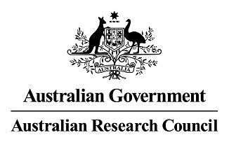
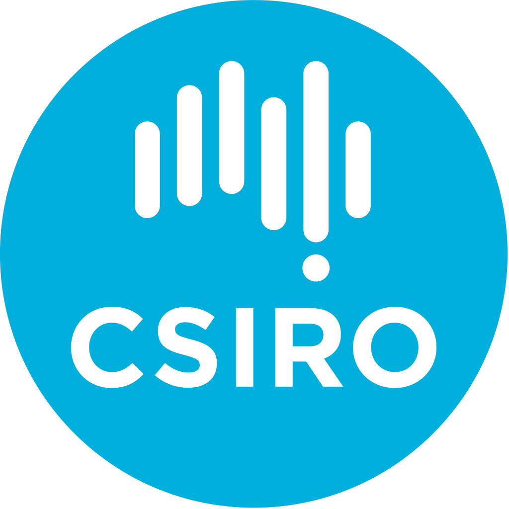
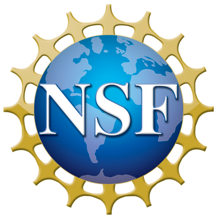

Feng Liu (he/him) @ The University of Melbourne
Home
|
Feng Liu, Ph.D.
Statistically grounded trustworthy machine learning for modern AI systems.
I lead research on rigorous methods for evaluating, adapting, and safeguarding AI systems under distribution shift, privacy risk, and real-world uncertainty.
Senior Lecturer in Machine Learning and ARC DECRA Fellow,
School of Computing and Information Systems,
The University of Melbourne
Co-Director, Trustworthy Machine Learning and Reasoning (TMLR) Lab
Visiting Scientist @ Imperfect Information Learning Team,
RIKEN-AIP
Visiting Fellow @ DeSI Lab,
Australian Artificial Intelligence Institute, UTS
Room 3317, Level 3, Melbourne Connect (Building 290), 700 Swanston Street, Parkville VIC 3010, Australia.
Academic: fengliu.ml [at] gmail.com | feng.liu1 [at] unimelb.edu.au
Industry: fengliu.genai [at] gmail.com
[Google Scholar]
[GitHub]
[Lab]
[CV]
|
Research Leadership
I build trustworthy AI with statistical guarantees. My research combines machine learning theory, trustworthy generative AI, and high-stakes AI evaluation to make modern AI systems more reliable, more governable, and more useful in practice.
This program sits at the intersection of research excellence, responsible AI deployment, and real-world impact across science, education, and safety-critical domains.
Research Agenda
I lead research on statistically grounded trustworthy AI. My current work is centered on data-adaptive hypothesis testing as a foundation for machine learning and certified evaluation of large language models with statistical guarantees.
More broadly, I build theory and methodology for understanding when modern AI systems can be trusted, how they fail under shift and uncertainty, and how they should be evaluated in high-stakes deployment.
Current Primary Priorities
Data-adaptive hypothesis testing for machine learning. I study adaptive testing procedures for modern ML systems, including e-processes for sequential and streaming settings and learned metrics / learned representations for measuring distributional closeness, dependence, and reliability. Certified evaluation of LLMs with statistical guarantees. I develop statistically principled methods for evaluating safety, jailbreak robustness, privacy leakage, unlearning, and deployment-time reliability of foundation models.
These priorities sit within a broader research program spanning trustworthy AI, statistical machine learning, and reliable deployment. A fuller overview is available on the Research Focus page.
Selected Leadership & Impact
Research leadership: Co-Director, Trustworthy Machine Learning and Reasoning (TMLR) Lab; Program Co-Chair, AJCAI 2026; Communication Chair, NeurIPS 2026; Co-Chair, ICML 2026 Workshop on Hypothesis Testing. Editorial roles: Action Editor, Transactions on Machine Learning Research; Action Editor, Neural Networks; Editorial Board Member, Machine Learning; Editor, ACM Transactions on Probabilistic Machine Learning. Selected recognition: NeurIPS 2022 Outstanding Paper Award; Top Area Chair Award, NeurIPS 2025; Outstanding Area Chair Award, ACM MM 2024; ARC DECRA Fellow; FEIT Excellence Award in Research.
Collaborations
I welcome collaborations on trustworthy AI, statistical machine learning, data-adaptive hypothesis testing, certified LLM evaluation, and the responsible deployment of AI in science, education, and other high-stakes domains.
Prospective students and collaborators are welcome to visit the Join Us page for future opportunities and project-based collaboration.
Short Biography
I am a Senior Lecturer in Machine Learning and ARC DECRA Fellow at the School of Computing and Information Systems, The University of Melbourne, where I co-direct the Trustworthy Machine Learning and Reasoning (TMLR) Lab. My research develops rigorous statistical foundations and practical methods for trustworthy AI, with representative publications in Nature Communications, Nature Plants, JMLR, TPAMI, TNNLS, NeurIPS, ICML, and ICLR.
Research Highlights
May/01/2026: Seven papers are accepted by ICML 2026. Congrats to the team! Apr/09/2026: One paper, on the topic of black-box model adaptation, is selected as a Highlight paper of CVPR 2026. Congrats to the team! Apr/07/2026: Will serve as a Communication Chair for NeurIPS 2026. Welcome to join NeurIPS 2026 held in Sydney! Mar/21/2026: Our workshop proposal on hypothesis testing has been accepted by ICML 2026. Will update more information soon! Feb/25/2026: Our paper on learning representations for independence testing is accepted by Transactions on Machine Learning Research! Many tools exist to detect dependence between random variables, a core question across a wide range of machine learning, statistical, and scientific endeavors. In this work, we show two related ways to learn powerful independence tests, with theoretical guarantees. Jan/26/2026: Three papers are accepted by ICLR 2026, including zero-shot prompt ensembling for VLMs, machine unlearning evaluation via independence measure, and certified (provable) distributional robustness with surrogates for disagreement discrepancy. Congrats to the team! Nov/11/2025: Grateful to receive the 2025 Early Career Researcher Award from Australian Pattern Recognition Society (APRS). Nov/03/2025: Grateful to receive the Top Area Chair Award of NeurIPS 2025. Oct/28/2025: Grateful to secure one ARC Discovery Project as a leading investigator. [Announcement] Oct/25/2025: Congrats Chengyi who received the Google PhD Fellowship in the machine learning track! Sep/19/2025: Eight papers are accepted by NeurIPS 2025, including one Spotlight on AI-generated video detection. Congrats to the team! Sep/01/2025: I have successfully confirmed my continuing faculty position (equivalent to passing the tenure track in the US academic system) and been promoted to Senior Lecturer, a tenured faculty position in Australia, similar to US Associate Professor (tenured faculty position in US). Huge thanks to my family, friends, colleagues, co-authors, postdocs, and students for their long-lasting support!! Aug/16/2025: Will serve as an Area Chair for ICLR 2026. Aug/15/2025: Will serve as an Area Chair for AISTATS 2026. July/16/2025: Congrats Zesheng on securing a National Intelligence Postdoctoral Grant! July/13/2025: Will join the Senior Program Committee for AAAI 2026. May/15/2025: One paper is accepted by ACL 2025 (Findings). Congrats to the team! May/12/2025: One paper is accepted by UAI 2025. Congrats to the team! May/02/2025: Nine papers are accepted by ICML 2025. Congrats to the team! Apr/29/2025: Our monograph, Trustworthy Machine Learning: From Data to Models (ISBN: 978-1-63828-548-9), is online (see pdf file here), simultaneously published in Foundations and Trends® in Privacy and Security. Congrats to the team! Apr/05/2025: One paper is selected as CVPR 2025 highlight presentation (acceptance rate < 3.0%). Congrats to the team! Mar/30/2025: One paper on model-inversion attack is accepted by TPAMI. Congrats to the team! Mar/04/2025: Grateful to receive the best paper award from AAAI Colorai Workshop for our privacy-preserving low-rank Adaptation (LoRA) work published in AAAI 2025. Also grateful to secure one project from Australia's Economic Accelerator (AEA) Ignite Program, working on the AI-driven wearables for falls prevention. Feb/17/2025: Will serve as an Area Chair for NeurIPS 2025. Jan/23/2025: Three papers are accepted by ICLR 2025, including one paper on machine-generated text detection with deep kernel hypothesis testing, and two papers on model reprogramming (one of parameter-efficient fine-tuning methodogies). Congrats to the team! Dec/19/2024: Grateful to receive the FEIT CIS Excellence Award in Research from the School of Computing and Information Systems at the University of Melbourne. Nov/28/2024: Grateful to receive the Australasian AI Emerging Research Award from Australian Computer Society. Nov/22/2024: Will serve as an Area Chair for ICML 2025. Nov/14/2024: Will serve as an Action Editor for Transactions on Machine Learning Research. Nov/06/2024: Grateful to receive one ARC Linkage Project. [Announcement] Oct/24/2024: Grateful to receive the Outstanding Area Chair Award of ACM MM 2024. Welcome to Melbourne! Oct/21/2024: Our tutorial proposal regarding model reprogramming (efficient fine-tuning) has been accepted by ACML 2024. Welcome to join ACML 2024! Oct/03/2024: Will serve as an Area Chair for AISTATS 2025. Sep/26/2024: Five papers are accepted by NeurIPS 2024, and one of them is selected as an oral paper (acceptance rate: 0.39%). Congrats to the team! Sep/17/2024: Continue to be listed as one of the top 2% of the world’s most cited scientists in 2023, according to the Stanford University Report. Aug/08/2024: Will serve as an Area Chair for ICLR 2025. Aug/06/2024: Will serve as a senior program committee member for AAAI 2025. Jun/13/2024: One paper is selected as ICML 2024 oral presentation (acceptance rate < 1.6%) and another one is selected as ICML 2024 spotlight (acceptance rate < 3.6%). Congrats to the team! May/30/2024: Will serve as an Area Chair for NeurIPS 2024 Datasets and Benchmarks Track. May/02/2024: Six papers are accepted by ICML 2024. Congrats to the team! Apr/25/2024: Will serve as an Area Chair for NeurIPS 2024. Apr/07/2024: One paper is accepted by JMLR. Congrats to the team! Jan/23/2024: Will serve as an Area Chair for ICML 2024. Jan/15/2024: One paper is accepted by ICLR 2024 and is selected as a spotlight paper (acceptance rate < 5.1%). Congrats to the team! Jan/10/2024: One paper is accepted by Nature Communications. Nov/27/2023: Grateful to receive the FEIT Excellence Award in Early Career Research at The University of Melbourne. Oct/25/2023: Our tutorial proposal regarding trustworthy machine learning has been accepted by AAAI 2024. Welcome to join AAAI 2024 at the Vancouver Convention Centre in Vancouver, BC, Canada, February 20 - February 27, 2024! Oct/04/2023: Grateful to be listed as one of the top 2% of the world’s most cited scientists in 2022, according to the Stanford University Report. Oct/02/2023: Will serve as an Action Editor for Neural Networks. Sep/25/2023: Our tutorial proposal regarding trustworthy machine learning has been accepted by ACML 2023. Welcome to join ACML 2023 at the Acıbadem University Conference Center in İstanbul, Turkey, November 11 - 14, 2023! Sep/22/2023: Four papers are accepted by NeurIPS 2023. Congrats to the team! Sep/11/2023: Will serve as an Area Chair for ICLR 2024. Aug/25/2023: Grateful to receive ARC Discovery Early Career Researcher Award (Category: 4611 Machine Learning). [Announcement] Jul/25/2023: Will serve as an Associate Editor for International Journal of Machine Learning and Cybernetics. Jul/25/2023: One paper is accepted by Nature Plants. Jul/24/2023: We will present three papers at ICML 2023 in Hawaii. Two are related to distribution-change detection (OOD detection and adversarial detection), and one is related to model adaptation. Jul/13/2023: I officially join the School of Computing and Information Systems at The University of Melbourne as an Assistant Professor in Machine Learning (a continuing position). Jul/10/2023: I will give a Keynote speech at the International Conference on Machine Learning and Cybernetics (ICMLC). Jun/15/2023: Our paper regarding Responsible AI (RAI) received the ECIS Best RiP Paper Runner-up Award. May/01/2023: We will present one paper regarding OOD detection at ICLR 2023 in Rwanda. Mar/14/2023: Our newly proposed journal, ACM Transactions on Probabilistic Machine Learning (ACM TOPML), is officially approved! I will serve as an editor of this journal. Welcome to submit your papers to our journal! Feb/20/2023: Grateful to secure one project from the NSF-CSIRO Joint Program in Responsible and Ethical AI. [NSF Announcement][CSIRO Announcement] Dec/02/2022: Will serve as a senior program committee member for IJCAI 2023. Nov/28/2022: We will present two papers at NeurIPS 2022 in New Orleans. One focuses on the learnability of OOD detection (outstanding paper), and the other uses the reprogramming property of deep neural networks to solve the OOD detection problem (spotlight paper). Nov/24/2022: Grateful to secure one ARC Discovery Project. [Announcement] Nov/21/2022: Our paper received the NeurIPS Outstanding Paper Award. Nov/17/2022: One paper is accepted by Nature Communications.
Research Experience
Senior Lecturer (US Associate Professor) (Aug 2025--now)
- The University of Melbourne, Melbourne, Australia
- A tenured teaching and research position in machine learning
Lecturer (US Assistant Professor) (May 2022--Aug 2025)
- The University of Melbourne, Melbourne, Australia
- A tenure-track teaching and research position in machine learning and data science
Visiting Fellow (May 2022--now)
- Australian Artificial Intelligence Institute, UTS, Sydney, Australia
- Collaborating with Dist. Prof. Jie Lu
Visiting Scientist (July 2021--now)
- Imperfect Information Learning Team,
- RIKEN
Center for Advanced Intelligence Project (RIKEN-AIP), Tokyo, Japan
- Collaborating with Prof. Masashi Sugiyama and Dr. Gang Niu
Australian Laureate Posdoc Researcher (May 2020--May 2021)
- Australian Artificial Intelligence Institute, UTS, Sydney, Australia
- Advisor: Dist. Prof. Jie Lu
- Project: Autonomous Transfer Learning
Visiting Researcher (August 2019--November 2019)
- Gatsby Computational Neuroscience Unit, UCL, London, UK
- Advisor: Prof. Arthur Gretton
- Collaborators: Dr. Danica J. Sutherland, Dr. Wenkai Xu
- Project: Learning Deep Kernels for Two Sample Test
Research Intern (March 2019--July 2019)
- Imperfect Information Learning Team, RIKEN-AIP, Tokyo, Japan
- Advisor: Prof. Masashi Sugiyama
- Collaborators: Dr. Gang Niu and Dr. Bo Han
- Project: Robust Unsupervised Domain Adaptation
Sponsors



|